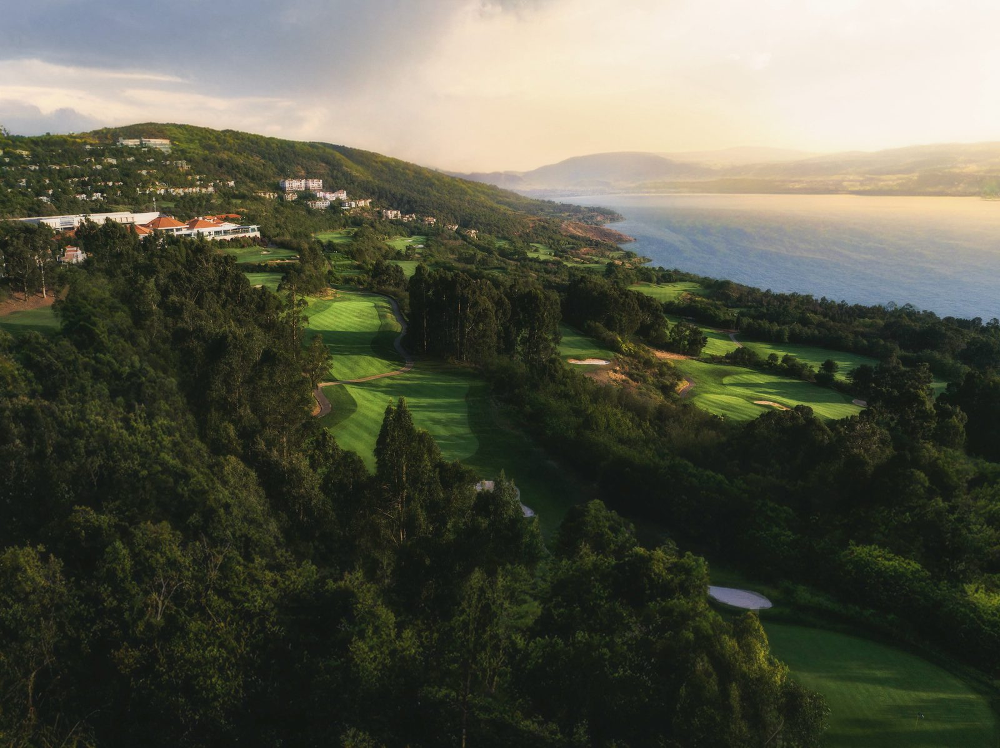
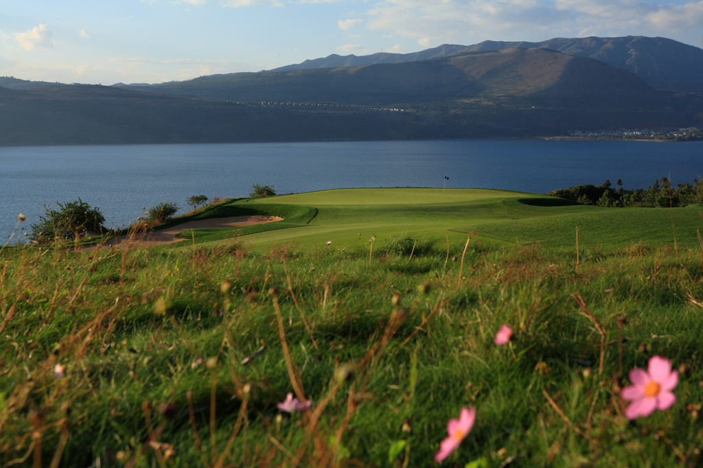
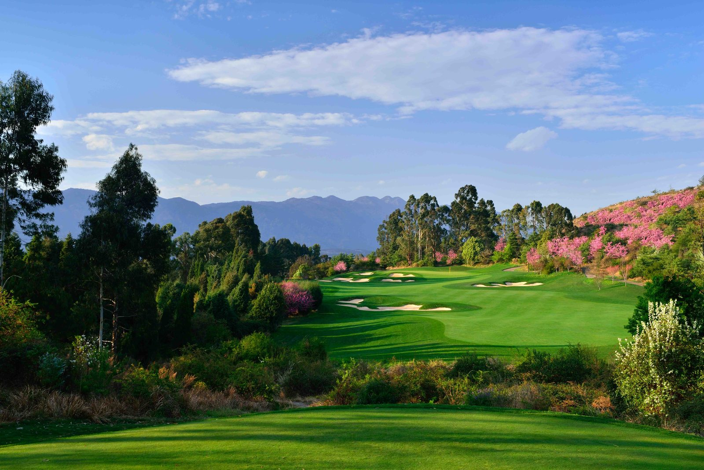
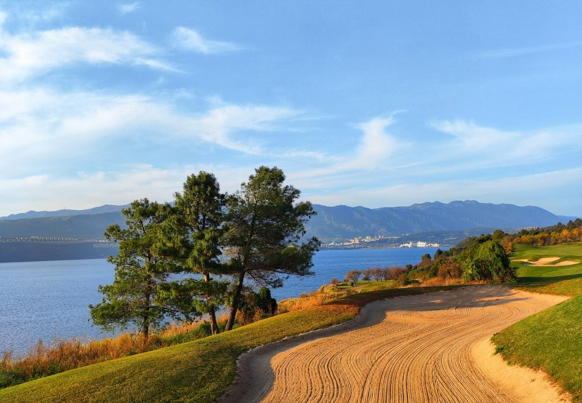
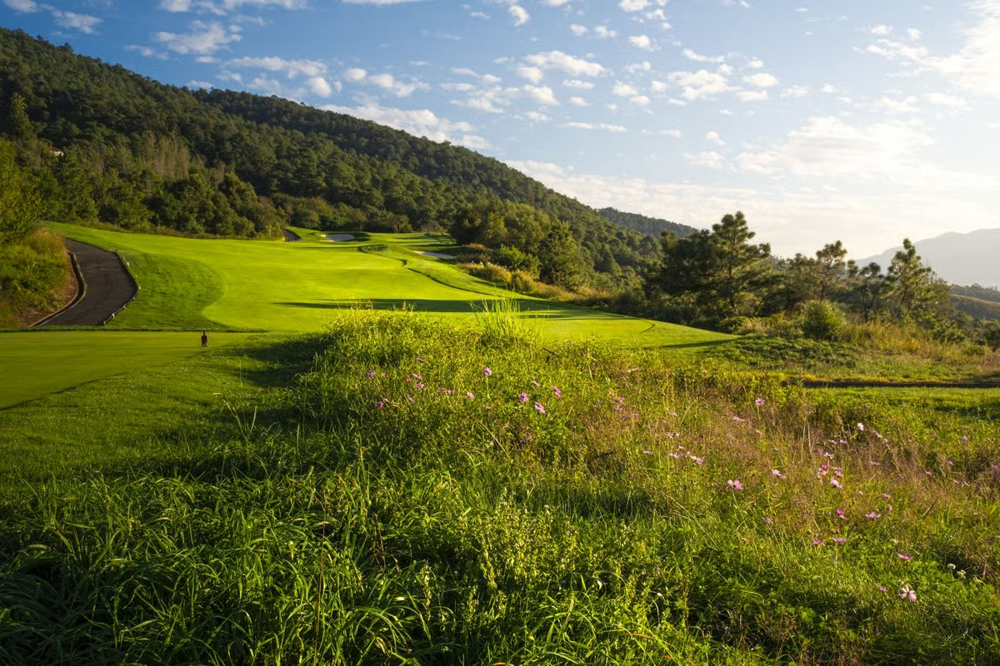
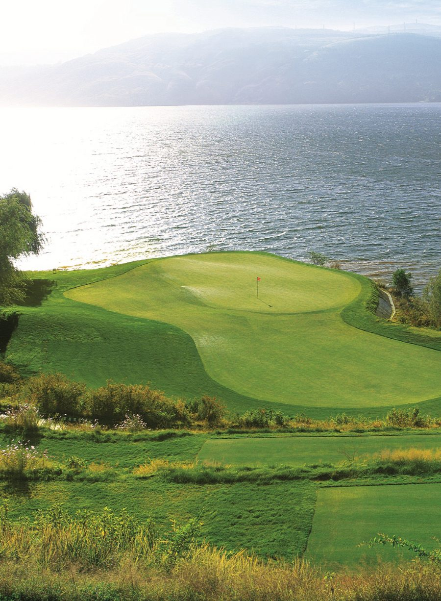

World Top 100Yangzong Lake · Kunming
Spring City Golf & Lake Resort
Asia's most complete golf resort: two courses ranked among the continent's finest, draped over hills above a highland lake at 2,000 metres. Robert Trent Jones Jr's Lake Course tumbles toward the water through forests of eucalyptus and pine — a World Top 100 fixture — while Jack Nicklaus' Mountain Course climbs the ridgeline above it, all elevation change and long views. The eternal-spring climate means both play beautifully in any month of the year.
- Designers
- Jack Nicklaus · Robert Trent Jones Jr
- Setting
- Lakeside highland, 2,000 m
- Best season
- Year-round
- Pair with
- Kunming's old quarters, the Stone Forest — then Lijiang by air